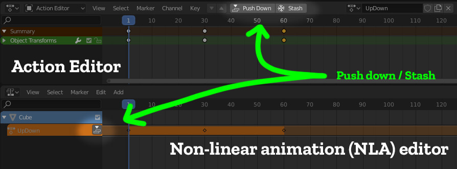

the Blender glTF Exporter 사용하기
참고: 다음 가이드에서는 최신 버전의 안정적인 Blender release 를 사용하고 있다고 가정합니다. 이전 버전의 블렌더 또는 실험용 빌드를 사용하는 것은 효과적일 수 있지만 보장되지는 않습니다.
최신 버전의 블렌더를 사용하려면 시작 시 블렌더 시작 화면의 오른쪽 상단을 보고 블렌더 기본 다운로드 페이지 https://www.blender.org/download/와 일치하는지 확인하십시오.

glTF로 내보낼 내용은 무엇입니까?
블렌더에서 만든 모든 것을 glTF(glb) 형식으로 내보낼 수 있는 것은 아니에요. 이는 Blender glTF import/export 추가 기능에 대한 지속적인 개선과 glTF 파일 형식 자체에 대한 변경으로 인해 지속적으로 변경되고 있죠. 일반적으로 텍스처(texture)를 가지고 있거나 또는 없거나, 정점(Vertex)) 색상이 있거나 없는 모델, 골격 skeleton(bone armature)가 있는 모델, 모양 키(모핑)가 있는 모델 및 애니메이션을 포함한 모델을 내보낼(export) 수 있습니다. (어느 시점에 상황이 바뀌지 않는 한) 올바르게 내보내지 못할 것: 블렌더의 입자 시스템(blender's particle system), 캐시된 정점 애니메이션(cached vertex animation, 유체 또는 천 시뮬레이션 등) 및 특정 유형의 셰이더를 예로 들 수 있어요.
블렌더 파일의 특정 부분을 내보내는데(export) 질문이나 문제가 있는 경우에, 자세한 내용은 다음을 참조해주시면 될 것 같아요.
Blender glTF Importer/Exporter Github repository
블렌더 모델을 올바르게 내보내는(export) 방법
블렌더에 표시되는 정보가 Spoke 및 Hubs에 표시되는지 확인하기 위해 몇 가지 사항을 점검해야 합니다. 이건 완벽한 리스트 항목은 아니지만 예상치 못한 결과를 초래할 수 있는 몇 가지 일반적인 내용을 포함하고 있습니다.
+ 척도(Scale)는 1, 1, 1이어야 합니다.
블렌더에서 스케일을 조정하고 스케일을 적용하는 것을 잊기 쉽습니다(ctrl+a). 개체의 척도(Scale)가 1, 1, 1이 아닌 다른 값을 읽는 경우 내보낸 모델이 표시되지 않을 수 있습니다.
+ 개체(Object)는 월드 오리진(0, 0, 0 / world origin) 또는 그 근처에 있어야 합니다
Sketchfab이나 Google Poly와 같은 제3자 사이트에서 제공되는 모델(특히 애니메이션인 경우)에서는 개체(Object)가 없는 것이 매우 일반적인 문제입니다. 따라서, 모델을 허브에 떨어뜨리고(drop down) 로딩 큐브(loading cube) 가 있는 곳과 거리가 멀면 이러한 문제가 발생하는 것을 알 수 있게 됩니다.
+ 보고 싶은 Modifiers 적용하기
블렌더 modifier 들이 내보낸 모델에 나타나려면 블렌더 modifier 를 적용해야 합니다. 예를 들어, 한쪽을 모델링한 후 다른 한쪽을 복제하기 위해 'Mirror' modifier 를 추가하는 문자는 해당 'Mirror' modifier 를 먼저 적용하지 않는 한 모델링된 절반만 내보냅니다. 설계를 계속 반복하고 있기 때문에 해당 modifier 를 적용하지 않으려면 모델을 먼저 복제하고 미러를 적용한 다음 해당 복제만 내보내면 됩니다. 참고: glTF 내보내기 도구에는 내보낼 때 '수정자 적용'으로 설정되어 있습니다. 그러나 이는 바람직하지 않을 수 있는 armature modifier 를 포함한 모든 modifier 를 적용합니다(골격(skeleton)에 대한 스킨 작업).
+ Objects with animation tracks need to have those tracks 'Stashed'
여러 애니메이션이 포함된 개체를 지원하려면 먼저 모든 애니메이션 트랙을 'Stashed' 또는 'Push Down' 으로 만들어야 glTF로 내보낼 수 있습니다. 액션 편집기(Action editor) 또는 NLA(비선형 애니메이션) 편집기에서 수행할 수 있습니다.

+ glTF와 glb는 같지만 정확히는 아닙니다.
TL;DR: 내보낼 때 .glb로 내보내는 것이 좋습니다.
Spoke 및 Hubs에서는 .glb 파일을 사용할 수 있습니다. 단일 .glb 파일에는 모든 메쉬 데이터, 이미지 텍스처 및 단일 이진 파일에 패킹된 관련 정보가 포함됩니다.
Glb 파일은 별도의 .bin 및 텍스처 파일을 이동할 필요가 없기 때문에 일반적으로 처리하기가 더 쉽습니다.
고급 사용자의 경우 텍스트 편집기(Editor)를 사용하여 파일을 수동으로 편집하려는 경우 glTF로 내보내도록 선택할 수 있습니다.
glTF를 glb로 변환하거나 그 반대로 변환하는 데 사용할 수 있는 여러 변환기가 있습니다.
자세한 내용은 glTF 파일 형식 개요 를 참조해주세요.
+ Exporter 도구 설정 이해
glTF 내보내기에는 이해해야 할 설정이 꽤 있지만 다행히 섹션별로 구분되어 있어 조금 더 쉽게 이해할 수 있습니다. 대부분의 경우 기본값이 제대로 작동합니다. 그러나 문제 해결 시 몇 가지 주의할 사항이 있습니다.
- (Include) 'Selected Objects' - 체크하면 원하는 선택된 항목만 내보낼 수 있습니다. 이 기능이 켜져 있다는 사실을 잊기가 쉽습니다. (그리고 먼저 항목을 선택하는 것을 잊기가 더 쉽습니다!)
- (Include) 'Custom Properties' - 이것은 사용자 지정 Hubs 구성 요소 추가 기능(나중에 자세히 설명)과 같은 것을 사용하는 경우 필요하지만 대부분의 경우 필요하지 않습니다.
- (Geometry) 'Apply Modifiers' - 위의 정보를 참조하십시오. 대부분의 경우 이 기능을 OFF 상태로 두는 것이 좋습니다.
- (Geometry) 'UVs, Normals, Tangents' - 가장 왼쪽을 ON 하는게 최선입니다. 원하지 않는 경우가 있을 수 있지만 드문 경우입니다.
- (Geometry) 'Vertex Colors' - 텍스처 대신 기본 색상을 적용하는 저렴하고 빠른 방법이 될 수 있는 모델에 정점 색상을 칠하기로 선택한 경우 이 옵션이 필요합니다. 그렇지 않으면 명백한 효과 없이 끌 수 있습니다.
- (Geometry) 'Materials' - 거의 모든 모델에는 재료가 제대로 표시되어야 하므로 이 ON이 필요합니다..
- (Geometry) 'Compression' - 이것은 좋은 생각처럼 보일 수 있지만 이 글을 쓰는 시점에서 Hubs는 Google Draco 메시 압축을 사용하는 개체를 지원하지 않습니다. 이것을 OFF로 둡니다.
- (Animation) 'Limit to Playback Range' - 전체 애니메이션을 내보내려면 재생 범위가 올바르게 설정되어 있는지 확인하십시오.
- (Animation) 'Always Sample Animations' - 이것은 경우에 따라 파일 크기를 크게 증가시키는 것으로 나타났습니다. 이 기능을 끄십시오. 애니메이션이 없어도 계속 작동하는 경우 OFF로 두십시오.
- (Animation) 'NLA Strips' - 개체에 많은 애니메이션 트랙을 숨겼으면 이 옵션을 켜야 합니다.
- Shape Keys - 모양 키(다른 소프트웨어에서는 모프 대상 또는 블렌드 모양이라고도 함)가 필요한 개체가 있는 경우 이 옵션을 켜야 합니다.
- (Shape Keys) 'Shape Key Normals' - 모프(morphs)가 개체의 법선에 특별한 작업을 수행하지 않는 한 이 기능을 끌 수 있습니다. 모프가 발생할 때 이상한 음영이 발생하는 경우 이를 토글해 보십시오.
- Skinning - 오브젝트가 골격 뼈대에 바인딩된 경우 이 옵션을 켜야 합니다.
언급되지 않은 매개 변수는 기본값으로 두는 것이 가장 좋습니다. 이 내보내기 도구(및 glTF 형식)는 여전히 자체 버그 수정 및 재설계가 적용되므로 일부 설정 및/또는 기본값은 향후 변경될 수 있습니다.
Spoke 및 Hubs 가 올바르게 표시될 재료 설정
Blender의 문서에는 glTF를 위해 재료를 구성하는 방법에 대한 최신 정보가 모두 포함되어 있습니다. 이 정보는 'gl'을 검색하면 쉽게 찾을 수 있습니다.의사록에 'TF'가 있어요 Blender's glTF 문서 링크
이러한 정보를 반복하는 대신 다음과 같은 몇 가지 유용한 팁이 제공됩니다.
+ 가능하다면 'unlit' Material 사용해주세요
'unlit'은 다소 혼동되는 명칭이지만, 장면(Scene) 내의 빛이 물체에 영향을 미치지 않는 Material 를 말합니다. 다시 말해, 스스로 완전히 빛을 발하는 것처럼 보입니다. Unlight Material 은 모든 장치에서 렌더링하고 동일하게 보이는 '가장 저렴한' Material 입니다. 이런 이유로 사람들은 조명(Lighting) 과 그림자 정보(shadow information) 를 먼저 베이스 컬러 텍스처(Base color texture) 에 'bake' 한 다음, unlit material 에 적용합니다. 블렌더 매뉴얼에는 unit shader graph 를 만드는 방법이 나와 있지만, 특별히 명확하게 설명해주는 것은 아닙니다.
부분적으로 이 부분이 힘든 이유는, 셰이더 그래프에서 'Background' 노드를 반드시 사용해야 하지만 기본적으로 'Background' 노드가 다른 노드들과 함께 나열되지 않기 때문이에요. 대신 여러분은 Shader 편집기를 'World' 모드로 전환하여 해당 노드를 찾은 다음 개체(Object) 의 Shader 그래프에 copy/paste 를 하셔서 붙여넣으셔야 합니다. 나중에 이것들을 Quick Favorites 메뉴에 추가하여 쉽게 찾을 수 있도록 할 수 있습니다.
백그라운드 노드가 있으면 이 노드에 텍스처를 연결하고 재료 출력으로 전송할 수 있습니다. glb로 내보내고 개체를 Spoke 또는 Hubs 로 가져오면 'unlit'(또는 생각하는 방식에 따라 완전히 켜짐)이 됩니다.
Unlit Material 은 어떠한 장면 조명에도 영향을 받지 않기 때문에 'Sky dome' 에 사용하기에 가장 좋은 Material 입니다. 일반적으로, 개체(Object) 가 조명에 따라 외관을 바꾸는 반사광이나 표면이 필요하지 않으면, unlit material 을 사용하면 됩니다.

위의 장면(Scene)에서는 모든 조명(lighting)을 블렌더에 bake 한 다음, unlit meterial 와 함께 export 했습니다. 이 장면(Scene)에서 조명(light) 을 설치하는 것은 방 자체에는 영향을 미치지 않지만 모든 장치에서 훌륭해 보입니다(그리고 같습니다).